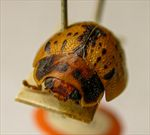
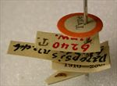

Click on images to enlarge
.jpg)
Fig. 1. Paropsis blanda type specimen, dorsal view
.jpg){kind=link}

Fig. 2. Paropsis blanda type specimen, anterior view
.jpg)
Fig. 3. Paropsis blanda type specimen, aedeagus
.jpg){kind=link}

Fig. 4. Paropsis blanda type specimen, labels

Fig. 5. Paropsis blanda, description
Name
Paropsis blanda Blackburn, 1897
Corresponds to
This species is very likely the same species as Ta167, which would make it a junior synonym of T. spilota (Chapuis). The main problem with this conclusion is that the sizes of both of these types are given as around 8 mm, which would make them unusually small specimens of Ta167 (and be a better fit for the Ta02 size distribution). Unfortunately, the base of the aedeagus of the P. blanda type is missing, so its length cannot be evaluated (the shape of the Ta167 and Ta02 aedeagi are very similar).
Diagnosis and Notes
Blackburn (1897) deals with P. blanda as part of his 'subgroup iv' (i.e., those species without "strongly marked characters", and whose greatest height is considerably in front of the middle of the elytral margin). Within that group, he characterises it as:
AA. Prothorax not (or scarcely) explanate at the sides;
B. The punctures of the elytra run evenly over the verrucae, which are scarcely elevated;
C. The suture broadly black in its front one-third.
Blackburn places blanda next to Ta02 in his key, and the two are certainly very similar in almost all repects. He does not include P. spilota (Chapuis) in his key at all, not having seen a type and considering the description inadequate. However, comparing the type of of spilota with that of blanda makes it clear that the two are almost certainly conspecific. They are of equivalent size and both have the elytral sutures black in the anterior portion and a pair of large black verrucae in the posterior third of elytra. The blanda type does differ slightly in having a greater extent of dark colouring dorsally.
Type specimen
Location: BMNH
Label data: /“Type” (red-bordered circle)/ “6240 Tamw. T”/ “Blackburn coll. 1910-236”/ “Paropsis blanda Blackb.”/ [aedeagus has been glued to a separate card].
Male; 8 mm (=3¾ lin, from description). Blackburn gives "N.S. Wales; Richmond River, &c." as the type locality, but the type is labelled "Tamw.", which possibly refers to Tamworth.
Original description
Translation of original description (Figure 1) by ChatGPT, 04/2026:
Allied to the preceding (P. punctipennis); even more convex; the pitchy parts of the prothorax very unequal (irregular); the suture of the elytra broadly black in front (the black colour widened before the middle of the suture), and the disc more or less variegated with black spots. Length 3¾ lines (~8 mm), width 3 lines (~6.4 mm).
References
Blackburn, T. 1897, "Revision of the genus Paropsis. Part II", Proceedings of the Linnean Society of New South Wales, vol. 22, 166-189 (page 170).
Copyright © 2026. All rights reserved.